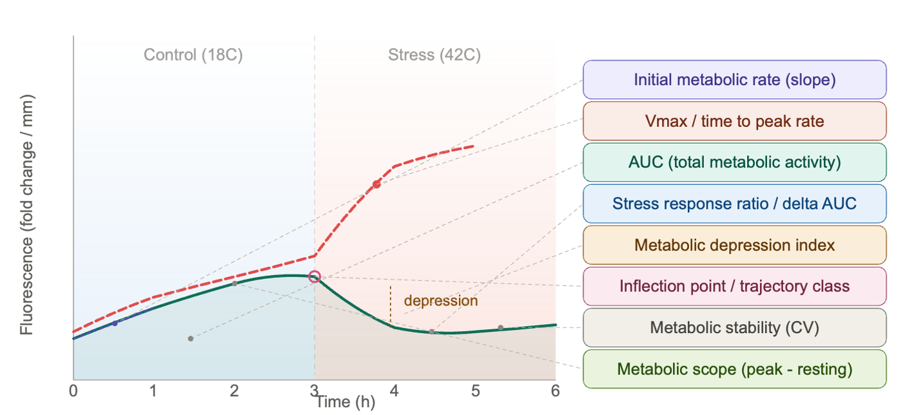

Based on the combined examination of resazurin results to date, the best experiment design should optimize for dynamic curve-shape metrics, not just endpoint fluorescence. A full notebook post is upcoming
The strongest recurring family-separating metrics were:
Early response/capacity:
auc_early,initial_slope,auc_totalDepression/stress trajectory:
delta_auc_late_minus_early,min_slope,metabolic_depression_index,depression_absEndpoint/scope metrics:
final_delta,metabolic_scope,peak_valueTiming metrics:
time_to_vmax,inflection_time
But one big caution: trough_value dominates several older experiments. That may be biologically real, but it can also reflect plate/family confounding or baseline/blank-correction structure, especially if families were grouped by plate. I would not design future experiments around trough alone.
Recommended Experiment Design
Run future assays with enough time resolution to estimate both early activation and late depression:
T0
0.5 h
1 h
1.5 h
2 h
3 h
4 h
Optional: 6 h if testing freshwater or slower RT responses
Optional: 24 h+ only if the goal is long-term metabolic depression/recovery
For heat-stress experiments, the most useful window appears to be 0-4 h, with dense early sampling. The 20260624-mgig-33C experiment only had 0, 1, 2, 3 h and produced weak family separation, so I would extend that to at least 4 h and add 0.5/1.5 h.
Best Conditions To Prioritize
I’d prioritize:
36C heat stress, 0-4 h, dense early sampling
- Good for
initial_slope,time_to_vmax,inflection_time,metabolic_scope,delta_auc_late_minus_early.
- Good for
Freshwater/heat stress, 0-32 h or 0-48 h
- Stronger family signals in existing data, especially AUC and depression/recovery metrics.
Avoid relying on 33C short-duration assays alone
- The 20260624 33C run had the weakest separation; useful, but not ideal as the main discriminating assay.
Most Important Design Fix
Randomize families across plates, wells, and rounds.
Do not put one family mostly on one plate. The best metrics should distinguish family biology, not plate effects. Ideally:
Each plate contains multiple families.
Each family appears on multiple plates.
Blanks are included on every plate.
Round is balanced across families.
Use the same timepoints for all plates/rounds.
Keep oyster size measurements; use
metabolism_per_area_mm2_measurementas the primary normalized metric.
Replication
Aim for at least:
10-12 oysters per family per condition
Preferably spread across 2-3 rounds
Each family represented in each round
The signal improved when experiments had enough individuals and enough timepoints to estimate curve shape.
Practical Recommendation
For the next family-comparison assay, I’d run:
36C heat stress, sampled at 0, 0.5, 1, 1.5, 2, 3, 4 h
Primary metrics to evaluate:
initial_slopeauc_earlyvmaxtime_to_vmaxmetabolic_scopedelta_auc_late_minus_earlymin_slopemetabolic_depression_indexstability_cv
Then, if freshwater stress is biologically central, run a second longer assay:
freshwater stress, sampled at 0, 1, 2, 4, 8, 24, 32 or 48 h
That one should emphasize AUC, late/early AUC ratio, final delta, and depression/recovery metrics.